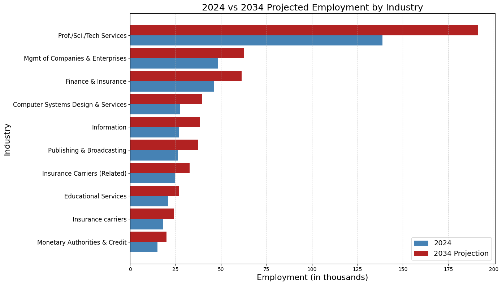

--------------------------------------------------------------------------- FileNotFoundError Traceback (most recent call last) Cell In[2], line 1 ----> 1 salary = pd.read_csv('Data/salaries_new.csv') File ~/ad688-group1-job-market-analysis-f25/.venv/lib/python3.12/site-packages/pandas/io/parsers/readers.py:1026, in read_csv(filepath_or_buffer, sep, delimiter, header, names, index_col, usecols, dtype, engine, converters, true_values, false_values, skipinitialspace, skiprows, skipfooter, nrows, na_values, keep_default_na, na_filter, verbose, skip_blank_lines, parse_dates, infer_datetime_format, keep_date_col, date_parser, date_format, dayfirst, cache_dates, iterator, chunksize, compression, thousands, decimal, lineterminator, quotechar, quoting, doublequote, escapechar, comment, encoding, encoding_errors, dialect, on_bad_lines, delim_whitespace, low_memory, memory_map, float_precision, storage_options, dtype_backend) 1013 kwds_defaults = _refine_defaults_read( 1014 dialect, 1015 delimiter, (...) 1022 dtype_backend=dtype_backend, 1023 ) 1024 kwds.update(kwds_defaults) -> 1026 return _read(filepath_or_buffer, kwds) File ~/ad688-group1-job-market-analysis-f25/.venv/lib/python3.12/site-packages/pandas/io/parsers/readers.py:620, in _read(filepath_or_buffer, kwds) 617 _validate_names(kwds.get("names", None)) 619 # Create the parser. --> 620 parser = TextFileReader(filepath_or_buffer, **kwds) 622 if chunksize or iterator: 623 return parser File ~/ad688-group1-job-market-analysis-f25/.venv/lib/python3.12/site-packages/pandas/io/parsers/readers.py:1620, in TextFileReader.__init__(self, f, engine, **kwds) 1617 self.options["has_index_names"] = kwds["has_index_names"] 1619 self.handles: IOHandles | None = None -> 1620 self._engine = self._make_engine(f, self.engine) File ~/ad688-group1-job-market-analysis-f25/.venv/lib/python3.12/site-packages/pandas/io/parsers/readers.py:1880, in TextFileReader._make_engine(self, f, engine) 1878 if "b" not in mode: 1879 mode += "b" -> 1880 self.handles = get_handle( 1881 f, 1882 mode, 1883 encoding=self.options.get("encoding", None), 1884 compression=self.options.get("compression", None), 1885 memory_map=self.options.get("memory_map", False), 1886 is_text=is_text, 1887 errors=self.options.get("encoding_errors", "strict"), 1888 storage_options=self.options.get("storage_options", None), 1889 ) 1890 assert self.handles is not None 1891 f = self.handles.handle File ~/ad688-group1-job-market-analysis-f25/.venv/lib/python3.12/site-packages/pandas/io/common.py:873, in get_handle(path_or_buf, mode, encoding, compression, memory_map, is_text, errors, storage_options) 868 elif isinstance(handle, str): 869 # Check whether the filename is to be opened in binary mode. 870 # Binary mode does not support 'encoding' and 'newline'. 871 if ioargs.encoding and "b" not in ioargs.mode: 872 # Encoding --> 873 handle = open( 874 handle, 875 ioargs.mode, 876 encoding=ioargs.encoding, 877 errors=errors, 878 newline="", 879 ) 880 else: 881 # Binary mode 882 handle = open(handle, ioargs.mode) FileNotFoundError: [Errno 2] No such file or directory: 'Data/salaries_new.csv'
AI Job Market & Salary Analysis
Introduction
Looking at data from both Kaggle & US Bureau of Labor Statistics, the 2020–2025 AI job market data shows strong growth in both demand and compensation for data and machine learning roles. Data Scientists and Data Engineers remain the most widely recruited positions, reflecting the need for analytics and robust data infrastructure across industries. Meanwhile, Machine Learning Engineers and AI-focused Software Engineers earn the highest salaries, demonstrating the premium placed on production-level AI expertise. Overall, the findings highlight a rapidly expanding and increasingly specialized AI workforce, as organizations shift from basic data use toward full-scale AI deployment.
1. AI & Machine Learning Job Market Overview
An overview of the current AI and Machine Learning job market, including demand trends and key roles.
Top 5 Most Common AI Job Titles
Looking at the data from 2020–2025, the AI & ML job market shows a clear divide between roles that are widely needed and those that are highly specialized and therefore highly paid. Data Scientists and Data Engineers dominate in overall demand, with 11,443 and 9,405 postings respectively. Their strong median salaries-152k for Data Scientists and 140k for Data Engineers—reflect their importance in building analytics capabilities and managing the data infrastructure that modern organizations rely on. These roles appear across every industry, which explains both their volume and consistency during this five-year period.
In contrast, Machine Learning Engineers and AI-focused Software Engineers command the highest salaries, earning 187,500 and 180,000 on median, even though the job counts are lower. This mismatch between demand and pay signals that companies are willing to pay a premium for talent capable of deploying, scaling, and maintaining production-grade AI systems—skills that are harder to hire for and more technically demanding. Data Analysts sit at the lower end of the salary range (median 100k) but still demonstrate strong demand, highlighting their role as an essential entry point for organizations building out analytics teams.
Overall, the 2020–2025 data suggests a maturing and layered AI workforce: large numbers of analysts and data scientists support business decision-making; data engineers build and maintain the pipelines that power AI; and highly specialized ML engineers and AI software developers are rewarded most for bringing models into production. This structure reflects how companies have evolved from simply “using data” to operating AI at scale, with compensation and job volume aligning closely to each role’s technical depth and organizational impact.
2. Salary vs. Experience Analysis among AI & ML Roles
Exploring how years of experience impact salary across different AI job titles.
Salary vs. Experience Analysis among AI & ML Roles
This scatter plot illustrates how salary levels evolve as years of experience increase across the dataset. Clear clustering emerges along the experience range. Roles requiring 0–1 years of experience occupy the lower end of the salary spectrum, typically ranging from around 40,000 to roughly 130,000. As experience requirements expand to 2–4 years, salaries rise noticeably, often reaching between 150,000 and 180,000. Beyond five years of required experience, salaries begin to jump more sharply, with many positions offering well above 200,000. At the upper end of the curve, roles that require 10–20 years of experience consistently occupy the highest salary levels in the dataset, frequently landing between 300,000 and 400,000 and sometimes exceeding those amounts.
Another important observation is the widening spread of salaries as experience increases. Entry-level and early-career roles have relatively tight, predictable compensation bands, suggesting more standardized pay structures. In contrast, mid-career, senior, and executive-level positions exhibit far greater variability. This spread reflects differences in industry, specialization, leadership responsibility, company size, and the nature of advanced technical roles. Two individuals with the same number of years of experience can have significantly different salaries depending on these factors. Overall, the plot highlights a strong positive relationship between experience and compensation, while also emphasizing that salary pathways become more diverse and less uniform as professionals move into higher levels of responsibility.
3. Future Employment Outlook
Analysis of the current Data Scientist job market and future trends.

The projected employment outlook shows strong and sustained growth for Data Scientists across nearly every major industry between 2024 and 2034. Professional, Scientific, and Technical Services remains the dominant employer, rising from just over 150,000 jobs today to nearly 200,000 positions by 2034—highlighting the critical role of advanced analytics and AI-driven innovation in consulting, R&D, and technology services. Significant growth is also expected in Management of Companies and Enterprises, Finance & Insurance, and Computer Systems Design & Services, where demand rises as organizations continue to formalize data strategy, enhance risk modeling, and expand digital transformation initiatives.
Overall, the trend suggests that the Data Scientist role will remain highly resilient and industry-agnostic, with employment gains driven by the accelerating integration of AI, automation, and real-time analytics into core business operations. In a study conducted by @rahhal2024data the authors further note that the job market is rapidly evolving, driven by technological changes and shifting skills requirements shows that demand for data-science and related roles is growing across diverse industries, and the skills employers seek are evolving — not just traditional analytics or database skills, but increasingly machine learning, big data processing, cloud infrastructure, and hybrid skill sets mixing analytics + engineering.
Unable to display output for mime type(s): application/vnd.plotly.v1+json